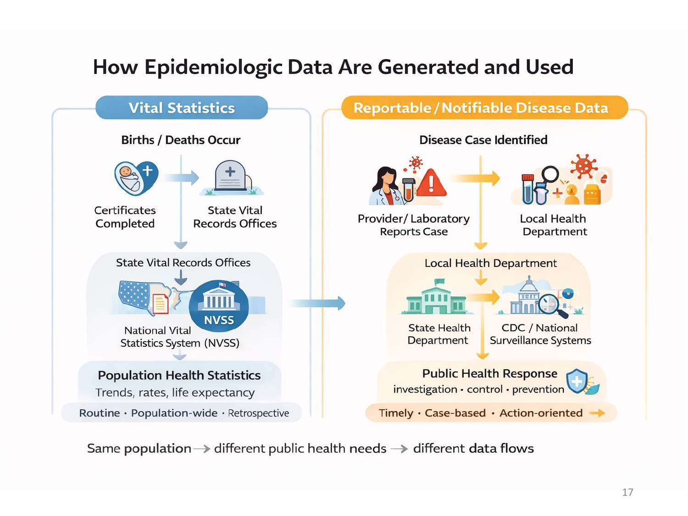
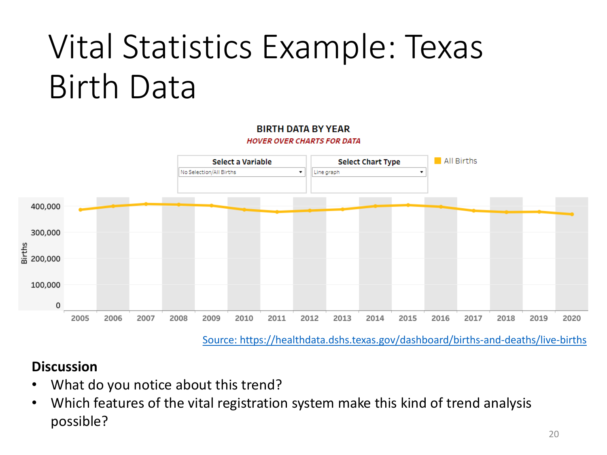
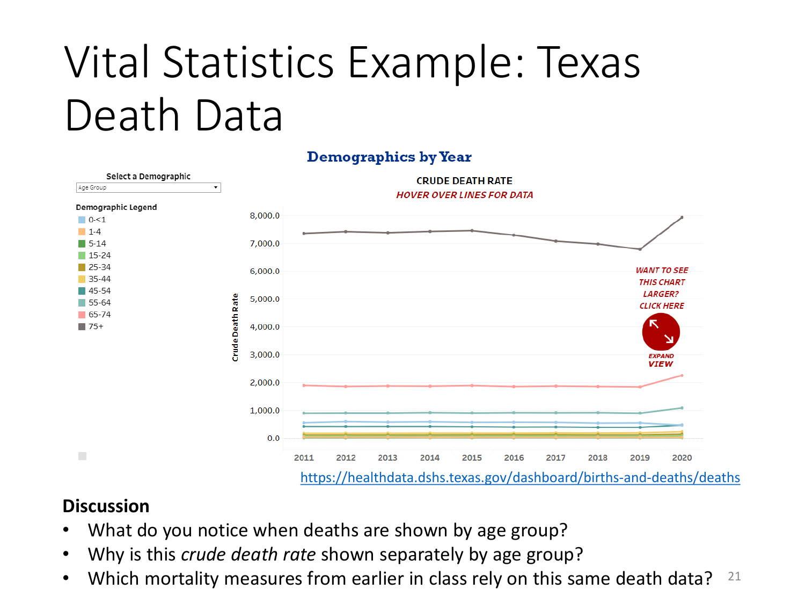

Disease Occurrence Data
APHS 20203 • Epidemiology & Biostatistics
Learning Objectives
By the end of this week, you should be able to:
Identify key factors that influence epidemiologic data quality .
Distinguish between vital statistics and reportable/notifiable disease data .
Identify major surveillance programs in the United States .
Describe major sources of epidemiologic data used in public health.
Explain the role of international organizations in collecting and disseminating epidemiologic data.
In our last module we learned about calculating some foundational epidemiologic measures.
Ask the class to recall some examples of measures.
But where do we get the data? That’s today’s topic.
Before diving in, let’s complete a reading comprehension exercise to refresh your memory and solidify what you read for this week.
Reading Comprehension Quiz 01
What does data linkage mean?
A. Removing identifying information from a database.
B. Summarizing records within a single database.
C. Joining information from databases using a common identifier.
D. Collecting new information through a health interview.
Answer: C. A: Good effort. Removing identifying information serves a different purpose. Data linkage connects information using a shared identifier.
B: Keep going. Summarizing records describes information already in a database. Linkage joins information across databases.
C: That’s right. A common identifier lets us connect related information stored in different databases.
D: Good effort. An interview collects information. Data linkage connects information already stored in databases. Reveal the answer: after_discussion. Show the distribution: yes. Responses are anonymous. If polling fails: Read the question aloud, allow time for us to think, then take a show of hands for each option and discuss the answers together.
A: Good effort. Removing identifying information serves a different purpose. Data linkage connects information using a shared identifier.
B: Keep going. Summarizing records describes information already in a database. Linkage joins information across databases.
C: That’s right. A common identifier lets us connect related information stored in different databases.
D: Good effort. An interview collects information. Data linkage connects information already stored in databases.
Reading Comprehension Quiz 02
What is the main purpose of data mining?
A. Finding previously unrecognized patterns in large amounts of data.
B. Proving that every observed relationship is a cause of disease.
C. Replacing electronic records with printed copies of the same information.
D. Removing every error from a collection of health records.
Answer: A. A: That’s right. Data mining explores large amounts of data to help us discover patterns and associations.
B: Good effort. A pattern can show an association, but data mining alone does not establish that one factor causes another.
C: Keep going. Changing how records are stored is different from exploring their contents for patterns.
D: Good effort. Data mining looks for patterns; it does not guarantee that the data are free of errors. Reveal the answer: after_discussion. Show the distribution: yes. Responses are anonymous. If polling fails: Read the question aloud, allow time for us to think, then take a show of hands for each option and discuss the answers together.
A: That’s right. Data mining explores large amounts of data to help us discover patterns and associations.
B: Good effort. A pattern can show an association, but data mining alone does not establish that one factor causes another.
C: Keep going. Changing how records are stored is different from exploring their contents for patterns.
D: Good effort. Data mining looks for patterns; it does not guarantee that the data are free of errors.
Reading Comprehension Quiz 03
How do census data help us calculate population-based disease rates?
A. They identify the immediate cause of each recorded death.
B. They confirm the diagnosis of each reported disease case.
C. They describe the treatment received by each hospital patient.
D. They provide population counts for the denominator of a rate.
Answer: D. A: Good effort. Causes of death come from death records. Census data help us describe the population used in the denominator.
B: Keep going. Census data describe populations; they do not confirm individual disease diagnoses.
C: Good effort. Treatment information comes from healthcare records. Census data provide population counts and characteristics.
D: That’s right. Census population counts help us define the denominator when calculating a population-based rate. Reveal the answer: after_discussion. Show the distribution: yes. Responses are anonymous. If polling fails: Read the question aloud, allow time for us to think, then take a show of hands for each option and discuss the answers together.
A: Good effort. Causes of death come from death records. Census data help us describe the population used in the denominator.
B: Keep going. Census data describe populations; they do not confirm individual disease diagnoses.
C: Good effort. Treatment information comes from healthcare records. Census data provide population counts and characteristics.
D: That’s right. Census population counts help us define the denominator when calculating a population-based rate.
Reading Comprehension Quiz 04
What are two examples of vital events recorded by the vital registration system?
Model answer: Births and deaths.
Acceptable equivalent wording: Any two of births, deaths, marriages, divorces, and fetal deaths are acceptable. Brief terms are enough; we do not need a formal definition.
Supportive guidance: Good effort. If our examples are medical visits or diagnoses, let’s distinguish healthcare encounters from vital events. Vital events include births, deaths, and changes in marital status. Reveal the answer: after_discussion. Show the distribution: no. Responses are anonymous. If polling fails: Give us a moment to write two examples on paper, then invite volunteers to share and compare our answers with the accepted examples.
Model answer: Births and deaths.
Acceptable equivalent wording: Any two of births, deaths, marriages, divorces, and fetal deaths are acceptable. Brief terms are enough; we do not need a formal definition.
Supportive guidance: Good effort. If our examples are medical visits or diagnoses, let’s distinguish healthcare encounters from vital events. Vital events include births, deaths, and changes in marital status.
Reading Comprehension Quiz 05
What limitation of death certificate data does the chapter describe?
A. Most deaths in the United States go unrecorded.
B. The recorded cause of death may be inaccurate.
C. Death certificates do not include demographic information.
D. Death certificates cannot be used to study mortality.
Answer: B. A: Good effort. The chapter describes death registration as nearly complete. The cause assigned to a recorded death can still be inaccurate.
B: That’s right. A death can be recorded even when its cause is unclear or classified inaccurately.
C: Keep going. Death certificates include demographic information such as age and sex. The chapter highlights possible errors in the cause of death.
D: Good effort. Death certificates are widely used to study mortality. We still need to consider their limitations. Reveal the answer: after_discussion. Show the distribution: yes. Responses are anonymous. If polling fails: Read the question aloud, allow time for us to think, then take a show of hands for each option and discuss the answers together.
A: Good effort. The chapter describes death registration as nearly complete. The cause assigned to a recorded death can still be inaccurate.
B: That’s right. A death can be recorded even when its cause is unclear or classified inaccurately.
C: Keep going. Death certificates include demographic information such as age and sex. The chapter highlights possible errors in the cause of death.
D: Good effort. Death certificates are widely used to study mortality. We still need to consider their limitations.
Reading Comprehension Quiz 06
What is the main purpose of public health surveillance?
A. Continuously collecting, analyzing, and sharing health information to guide public health action.
B. Providing individual treatment plans during routine appointments with healthcare providers.
C. Collecting health information once and storing it without analysis or interpretation.
D. Assigning participants to treatments to compare the effects of different medicines.
Answer: A. A: That’s right. Surveillance helps us monitor health problems over time and share findings that support public health action.
B: Good effort. Individual treatment is part of clinical care. Surveillance gathers and uses information about health in populations.
C: Keep going. Surveillance is ongoing and includes analyzing, interpreting, and sharing information, not just storing it.
D: Good effort. Assigning treatments is part of an experimental study. Surveillance monitors the occurrence of health problems and risk factors. Reveal the answer: after_discussion. Show the distribution: yes. Responses are anonymous. If polling fails: Read the question aloud, allow time for us to think, then take a show of hands for each option and discuss the answers together.
A: That’s right. Surveillance helps us monitor health problems over time and share findings that support public health action.
B: Good effort. Individual treatment is part of clinical care. Surveillance gathers and uses information about health in populations.
C: Keep going. Surveillance is ongoing and includes analyzing, interpreting, and sharing information, not just storing it.
D: Good effort. Assigning treatments is part of an experimental study. Surveillance monitors the occurrence of health problems and risk factors.
Reading Comprehension Quiz 07
What makes a disease a reportable disease?
A. Its cases are described in a published research article.
B. Its cases are counted in the population census.
C. Its cases are discussed in a television news report.
D. Its cases must be reported to health authorities under law.
Answer: D. A: Good effort. Publication in a research article does not make a disease reportable. The term refers to a required report to health authorities.
B: Keep going. A census counts and describes a population. Disease reporting is a separate process required for specified diseases.
C: Good effort. News coverage is different from the required reporting of disease cases to health authorities.
D: That’s right. Reportable diseases are diseases whose cases healthcare providers must report to health authorities under legal requirements. Reveal the answer: after_discussion. Show the distribution: yes. Responses are anonymous. If polling fails: Read the question aloud, allow time for us to think, then take a show of hands for each option and discuss the answers together.
A: Good effort. Publication in a research article does not make a disease reportable. The term refers to a required report to health authorities.
B: Keep going. A census counts and describes a population. Disease reporting is a separate process required for specified diseases.
C: Good effort. News coverage is different from the required reporting of disease cases to health authorities.
D: That’s right. Reportable diseases are diseases whose cases healthcare providers must report to health authorities under legal requirements.
Reading Comprehension Quiz 08
What is one reason reportable disease statistics may miss some cases of disease?
Model answer: Some people with a disease do not seek medical care, so their cases may never be reported.
Acceptable equivalent wording: We can mention an illness without noticeable symptoms, a healthcare provider failing to submit a report, lack of awareness of reporting requirements, or reluctance to report because of confidentiality concerns. Any one reason is enough.
Supportive guidance: Good effort. A reporting requirement does not guarantee that every case is recognized and reported. If our answer assumes complete coverage, let’s remember that some illnesses never come to medical attention. Reveal the answer: after_discussion. Show the distribution: no. Responses are anonymous. If polling fails: Give us a moment to write one reason on paper, then invite volunteers to share and discuss why some cases may be missing.
Model answer: Some people with a disease do not seek medical care, so their cases may never be reported.
Acceptable equivalent wording: We can mention an illness without noticeable symptoms, a healthcare provider failing to submit a report, lack of awareness of reporting requirements, or reluctance to report because of confidentiality concerns. Any one reason is enough.
Supportive guidance: Good effort. A reporting requirement does not guarantee that every case is recognized and reported. If our answer assumes complete coverage, let’s remember that some illnesses never come to medical attention.
Reading Comprehension Quiz 09
A. A list of citations to published health research articles.
B. A centralized database of information about a disease and its cases.
C. A count of all residents in a geographic area.
D. A schedule of appointments available at a healthcare clinic.
Answer: B. A: Good effort. A list of research citations helps us find literature. A case registry collects information about a disease and its cases.
B: That’s right. A case registry brings disease information together so we can track cases and study disease patterns.
C: Keep going. A population count describes how many people live in an area. A case registry focuses on a disease and its cases.
D: Good effort. An appointment schedule organizes clinic visits. A registry collects disease information for purposes such as tracking cases and supporting research. Reveal the answer: after_discussion. Show the distribution: yes. Responses are anonymous. If polling fails: Read the question aloud, allow time for us to think, then take a show of hands for each option and discuss the answers together.
A: Good effort. A list of research citations helps us find literature. A case registry collects information about a disease and its cases.
B: That’s right. A case registry brings disease information together so we can track cases and study disease patterns.
C: Keep going. A population count describes how many people live in an area. A case registry focuses on a disease and its cases.
D: Good effort. An appointment schedule organizes clinic visits. A registry collects disease information for purposes such as tracking cases and supporting research.
Reading Comprehension Quiz 10
How does the National Health and Nutrition Examination Survey (NHANES) differ from the National Health Interview Survey (NHIS)?
A. NHANES gathers death certificates instead of conducting interviews.
B. NHANES uses only interviews, while NHIS adds physical examinations.
C. NHANES adds physical examinations to interviews, while NHIS uses interviews only.
D. NHANES gathers published research articles instead of information from participants.
Answer: C. A: Good effort. NHANES collects information through interviews and examinations. Death certificates are a separate source of health data.
B: Keep going. The distinction is reversed: NHANES includes physical examinations, while NHIS collects information through interviews only.
C: That’s right. Both surveys use interviews, and NHANES also uses physical examinations, which can reveal previously undiagnosed conditions.
D: Good effort. NHANES collects information from participants through interviews and examinations; it is not a literature search. Reveal the answer: after_discussion. Show the distribution: yes. Responses are anonymous. If polling fails: Read the question aloud, allow time for us to think, then take a show of hands for each option and discuss the answers together.
A: Good effort. NHANES collects information through interviews and examinations. Death certificates are a separate source of health data.
B: Keep going. The distinction is reversed: NHANES includes physical examinations, while NHIS collects information through interviews only.
C: That’s right. Both surveys use interviews, and NHANES also uses physical examinations, which can reveal previously undiagnosed conditions.
D: Good effort. NHANES collects information from participants through interviews and examinations; it is not a literature search.
Data Sources
Primary vs. secondary data
Primary data: Data we collect ourselves for a specific purpose.
For example, a survey, interview, direct observation, or laboratory measurement we design and conduct.
Secondary data: Data that already exists because it was collected by someone else. Often for a different purpose than ours.
For example, electronic health records, surveillance data, census data, hospital discharge records, or a previously conducted survey.
The practical tradeoff:
Primary data give us more control over what and how we measure, but take more time and resources.
Secondary data are faster and often less expensive to use, but their variables, measurement quality, population, and timing may not fully fit our question.
This is a topic we will explore today.
Exercise: Primary Vs. Secondary Data
Our county wants to understand barriers to staying safe during extreme heat. We can fund one initial approach:
A. Interview residents about cooling access and transportation. We can ask exactly what we need, but recruitment takes time and some residents may not respond.
B. Analyze existing emergency-department records. They show serious health events, but miss people who never reach an emergency department.
C. Combine existing housing, tree-cover, and population data. They describe neighborhood conditions, but do not tell us who became ill.
Which would we start with and why?
Take 2 minuts to answer these questions with your group.
A fits questions about residents’ experiences;
B fits serious illness and healthcare use;
C fits environmental conditions and geographic targeting.
Each becomes more or less useful as the question changes.
Ask: “What would your chosen source leave unanswered?”
Neither primary nor secondary data guarantees quality.
Neighborhood data can be relevant to health without containing diagnoses.
Takeaway: Choose the source after clarifying the question.
Data Sources
Primary vs. secondary data
Health data by design vs. health insights from repurposed data
In epidemiology, we frequently use data that was collected explicitly to understand health (e.g., Vital Statistics, NHANES).
However, it’s becoming increasingly common to use data that was created for a different purpose (e.g., Google Trends).
We will see examples of both.
Vital Events
Deaths, births, marriages, divorce, and fetal deaths.
Legally mandated.
Births: Local -> State
Perhaps the most basic health data is births and deaths.
In the United States, birth certificates managed, stored, and issued by individual state and local governments.
Death certificates are also managed and stored by individual state, county, or local vital statistics offices.
However, the NCHS, a division of the CDC, tracks every single death occurring within the US.
Vital Events - Mortality
Deaths, births, marriages, divorce, and fetal deaths.
Legally mandated.
Births: Local -> State
Deaths: Local -> State -> Federal (NCHS)
https://www.cdc.gov/nchs/nvss/index.htm
Death certificates are also managed and stored by individual state, county, or local vital statistics offices.
However, the NCHS, a division of the CDC, tracks every single death occurring within the US.
Exercise: Vital-Statistics Retrieval
Open CDC’s Mortality in the United States, 2024 . Each pair takes one task:
A. Life expectancy: Find life expectancy at birth. Explain why it is not a promise about how long a particular newborn will live.
B. Death rates: Find the age-adjusted death rates for 2023 and 2024. Explain what age adjustment contributes to the comparison.
C. Leading causes: Find which cause entered the top ten in 2024. Did its age-adjusted death rate increase?
Produce two sentences: one accurate finding with year and units, and one interpretation or limitation.
How to run it and timing: 8 minutes: 1 minute to assign tasks, 3 for retrieval, 1 to write, and 3 for up to three voluntary reports and synthesis. Preparation: link directly to the brief and have its tables available on paper.Instructor notes and debrief: Verified answers are 79.0 years ; 750.5 versus 722.1 deaths per 100,000 standard population ; and suicide , whose age-adjusted rate declined from 14.1 to 13.7 even as it became the tenth leading cause. CDC brief .Life expectancy summarizes mortality conditions; age adjustment facilitates comparisons accounting for age composition. Ranking is relative to other causes, so a rank can rise while a rate falls. Ask: “Which finding would we use to compare mortality across populations with different age structures?”
Takeaway: Report the measure and its meaning together.
Leading Cause ≠ Highest Risk
Leading causes of death are ranked by proportion of total deaths (PMR) .Ranking answers “how many deaths? ” → Burden .
Risk answers “how likely is death? ” → measured by rates (e.g., CSMR ).A cause with a lower rank can still pose high risk to specific populations.
Public health concern depends on context , not rank alone.
Burden ≠ Risk
Example: Suicide
Suicide is not a top-ranked cause of death overall .
But it is a leading cause of death among young adults .
This reflects high cause-specific mortality rates in certain groups.
Key contrast:
PMR (overall): low
CSMR (subgroups): high
Exercise: One Death, Several Conditions — Death-Certificate Interpretation
The certifying clinician documents this sequence:
COVID-19 → pneumonia → acute respiratory distress syndrome → death.
The clinician also documents diabetes as contributing to the death.
A reader says: “The person died of respiratory distress, so this should not count as a COVID-19 death.”
In two sentences, explain what the reader has misunderstood. Then identify one uncertainty that could still affect the accuracy of the death certificate.
How to run it and timing: 8 minutes: 1 minute to explain the documented sequence, 2 for individual writing, 2 for pairs, and 3 for debrief. Introduce “underlying” as the condition initiating the sequence; students need not diagnose the case.
Instructor notes and debrief: In this supplied sequence, COVID-19 is the underlying cause, respiratory distress syndrome the immediate cause, and diabetes an additional contributing condition. Multiple listed conditions do not negate the underlying cause. CDC’s certification guidance explicitly illustrates reporting COVID-19 together with pneumonia and respiratory distress. CDC guidance
Legitimate uncertainties include incomplete clinical information and errors in documenting the sequence. The factual correction is not an invitation to assume every certificate is accurate.
Ask: “How would ‘deaths with COVID-19 listed anywhere’ differ from ‘deaths with COVID-19 as the underlying cause’?”
Takeaway: Complete death registration and accurate cause classification are different qualities.
Exercise: Find the Denominator That Belongs to Our Numerator
Simulated numerator: During 2025, 2,248 Tarrant County residents died from a fictional condition.
Open Census QuickFacts: Tarrant County .
Find the population estimate most appropriate for this numerator. Record its value and date.
Calculate deaths per 100,000 residents.
Explain why the 2020 Census count is less suitable.
Extension: If the deaths were only among residents aged 65 or older, what would need to change?
How to run it and timing: 9 minutes: 1 minute of instructions, 3 for retrieval, 2 for calculation, and 3 for comparison and the extension. Pairs need a browser and calculator. Preparation: bookmark the page and retain the two population figures below as a fallback.
Instructor notes and debrief: QuickFacts currently reports 2,248,466 residents on July 1, 2025 , and a 2020 Census count of 2,110,640 . Census source
The intended calculation is:
\[
\frac{2,248}{2,248,466} \times 100,000 \approx 100.0
\]
Using the 2020 count gives 106.5 per 100,000 . The difference arises entirely from denominator selection. For deaths among older residents, use the corresponding older population, with compatible geography and year.
Ask: “Would the same denominator work for deaths occurring in Tarrant County hospitals, including nonresidents?”
Takeaway: A plausible population number is not necessarily the correct denominator.
Review of Mortality: Real Data (CDC NVSS, 2023)
Source: CDC NCHS Data Brief 521
Selected findings:
Life expectancy: 78.4 years (↑ 0.9 from 2022)
Age-adjusted death rate: ↓ 6.0% (798.8 → 750.5 per 100,000)
Age-specific death rates decreased for all age groups ≥5 years.
Leading causes unchanged: heart disease, cancer, injuries.
Infant mortality: 560.2 per 100,000 live births (no change).
Leading Cause ≠ Highest Risk
Leading causes of death are ranked by proportion of total deaths (PMR) .Ranking answers “how many deaths? ” → Burden .
Risk answers “how likely is death? ” → measured by rates (e.g., CSMR ).A cause with a lower rank can still pose high risk to specific populations.
Public health concern depends on context , not rank alone.
Burden ≠ Risk
Example: Suicide
Suicide is not a top-ranked cause of death overall .
But it is a leading cause of death among young adults .
This reflects high cause-specific mortality rates in certain groups.
Key contrast:
PMR (overall): low
CSMR (subgroups): high
Conceptual Transition
You just interpreted multiple mortality measures using one short summary.
Question: What assumptions are we making about the data behind these numbers?(Write down your responses; we will revisit soon.)
Epidemiologic Data
Epidemiologic data are population-based data used to:
Describe disease occurrence
Monitor health trends
Identify disparities
Epidemiologic data capture:
Morbidity (disease, illness)Mortality (death)
Major sources of epidemiologic data:
Vital statistics
Reportable/notifiable disease data
Survey and surveillance data
Factors Affecting Epidemiologic Data Quality
Data quality reflects whether the assumptions behind our measures hold.
Key dimensions:
Coverage: Who is included?Accuracy: Are events classified correctly?Consistency: Are the same definitions used over time and place?Timeliness: How current are the data?Processing and quality control: Errors and checks
Two Types of Epidemiologic Data Systems
Epidemiologic data systems serve different public health purposes .
VITAL STATISTICS
Track life events (births, deaths)
Population-wide and complete
Designed for long-term patterns
REPORTABLE/NOTIFIABLE DISEASE DATA
Track specific diseases
Focus on timeliness and rapid detection
Designed for public health action
Same population → different questions → different systems
How Epidemiologic Data Are Generated and Used

Vital Registration System
Vital events: births, deaths, fetal deaths, marriages, divorcesIn the United States, these events are compiled through the National Vital Statistics System (NVSS) .
https://www.cdc.gov/nchs/nvss/index.htm
Vital Statistics Example: Texas Birth Data

Vital Statistics Example: Texas Death Data

Why Do Some Diseases Have to Be Reported?
Some diseases require immediate public health action .
Waiting for routine statistics is too slow.
These data support detection, response, and control .
Different purpose → different data system
Reportable/Notifiable Disease Data
Case-based surveillance Focus on specific diseases of public health importance
Information typically includes:
Case counts (incidence)
Basic person, place, and time
Key clinical outcomes
Key tradeoff:
Strength: Timeliness
Limitation: Incomplete population coverage
Designed for action, not completeness.
Reportable vs. Notifiable — What’s the Difference?
REPORTABLE DISEASES
Reported to local or state health departments
Used for local public health action
Lists vary by jurisdiction
NOTIFIABLE DISEASES
Reported to national authorities (e.g., CDC)
Aggregated for national monitoring
De-identified (age, sex, location)
Every notifiable disease is first reported locally.
Same case → different reporting level → different purpose
Examples of Nationally Notifiable Diseases
National Notifiable Diseases Surveillance System (NNDSS): the endpoint of the data-report flow
Anthrax
COVID-19
Botulism
Gonorrhea
Hepatitis A, hepatitis B, hepatitis C
Human immunodeficiency virus (HIV) infection
Meningococcal disease
Mumps
Syphilis
Tuberculosis
Viral hemorrhagic fever (includes Ebola virus)
Zika virus disease
Source: Centers for Disease Control and Prevention. National Notifiable Diseases Surveillance System (NNDSS). 2022 Nationally Notifiable Conditions. Available at: https://ndc.services.cdc.gov/event-code-list-other-surveillance-resources/ . Accessed February 20, 2025.
Discussion: Nationally Notifiable Diseases
Pick one disease on the list. At what level would it first be reported?
Why would CDC want to track this nationally?
Would birth or death data ever appear on this list? Why not?
Surveillance: From Reporting to Monitoring
Reporting captures individual cases .
Surveillance looks for patterns over time .
Goal: inform ongoing public health action .
Reporting → Surveillance → Action
Two Approaches to Public Health Surveillance
Routine, ongoing monitoring
Real-time, early warning
Uses confirmed diagnoses
Uses symptoms and signals
Tracks incidence and trends
Detects unusual patterns
Usually takes place in: Public health departments, registries, national systemsUsually takes place in: Emergency departments, urgent care, pharmacies
Example: flu incidence over years
Example: spikes in fever-related ER visits
Exercise: Types of Surveillance
Match each scenario with the correct type:
PUBLIC HEALTH SURVEILLANCE
Long-term, systematic, incidence and policy focus
SYNDROMIC SURVEILLANCE
Real-time, early warning, symptom and pattern focus
Exercise: Types of Surveillance — Scenarios
Health officials analyze flu vaccination rates every year to guide next season’s immunization campaign.
A sudden rise in ER visits for fever and cough signals a possible flu outbreak.
Monitoring long-term cancer incidence to plan screening programs.
Tracking over-the-counter cold medicine sales during winter to catch early spikes.
Focus on why one approach fits better than the other.
Public Health Surveillance Programs
Communicable and infectious diseases
Track cases, hospitalizations, and spread
Example: COVID-19 surveillance (cases, hospitalizations)Example: National Wastewater Surveillance System (NWSS) Chronic diseases
Monitor long-term incidence and outcomes
Example: Cancer registries (incidence, types, outcomes)Example: CDC Chronic Disease Indicators (CDI; state-level indicators for chronic disease patterns) Risk factors for chronic disease
Track behaviors and exposures
Example: BRFSS (obesity, smoking, physical activity)
National Center for Health Statistics (NCHS)
NCHS is a major source of U.S. population-based health data.
NCHS data complement surveillance by describing population health beyond reported cases.
Survey-based systems
NHIS: health status, access to care, preventionNHANES: exams and interviews (diet, activity, disease prevalence) Vital statistics
NVSS: births, deaths, life expectancy, leading causes of death
Why International Organizations Matter
Diseases cross national borders.
Data must be comparable across countries .
Surveillance and response require coordination .
What International Organizations Do
Surveillance and reporting — global monitoring
Example: WHO Global Influenza Surveillance and Response System (GISRS) Policy guidance — shared recommendations
Example: UNAIDS guidance for HIV/AIDS programs Resource support — capacity and access
Example: Gavi, the Vaccine Alliance
Key Takeaways: Epidemiologic Data
Epidemiology depends on population-based data to describe health patterns.
Different public health questions require different data systems. Vital statistics describe long-term population patterns (births, deaths).Reportable disease data support rapid detection and public health response.Surveillance turns reported data into ongoing monitoring and action.Data quality determines what conclusions can (and cannot) be drawn.Selecting an appropriate data source is a critical epidemiologic decision .